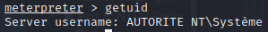

System infos
> getuid

> sysinfo

- => x64 architecture, x86 meterpreter : not optimal !
- : let's try to upload a different payload with an x64 meterpreter
> help

- Core Commands
- File system Commands
- Networking Commands
- System Commands
- User interface Commands
- Webcam Commands
- Audio Output Commands- - Elevate Commands
- - Password database Commands
- - Timestomp Commands